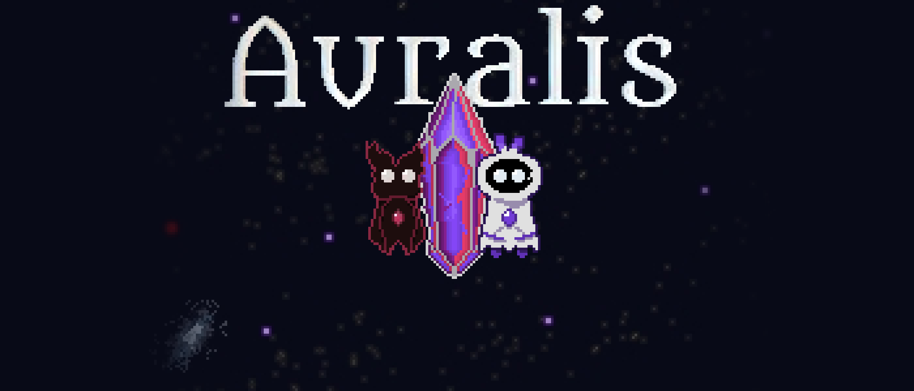

Algunos de los juegos en los que trabajé. El resto del catálogo está en Otros proyectos.
Some of the games I've worked on. The rest of the catalog is in More projects.

Puzzle-platformerDos fragmentos de un mismo ser buscan volver a ser uno, y los movés a los dos con las mismas teclas. Hecho en equipo para la SANDA Game Jam 2026.
Two fragments of the same being try to become one again, and you move both with the same keys. Made as a team for the SANDA Game Jam 2026.
 Puzzle
PuzzlePuzzle top-down donde la luz te mata o te salva. Su idea central: morir corrompe el piso y te da nuevas herramientas. El fracaso construye la solución.
A top-down puzzle game where light either kills you or saves you. Its core idea: dying corrupts the floor and gives you new tools. Failure builds the solution.
 PlataformasPlatformer
PlataformasPlatformerPlatformer 2D de aventura: explorás un templo antiguo con un gancho de agarre que se vuelve tu mejor amigo. Cada salto, giro y suelta importa.
A 2D adventure platformer: you explore an ancient temple with a grappling hook that becomes your best friend. Every jump, swing and release matters.